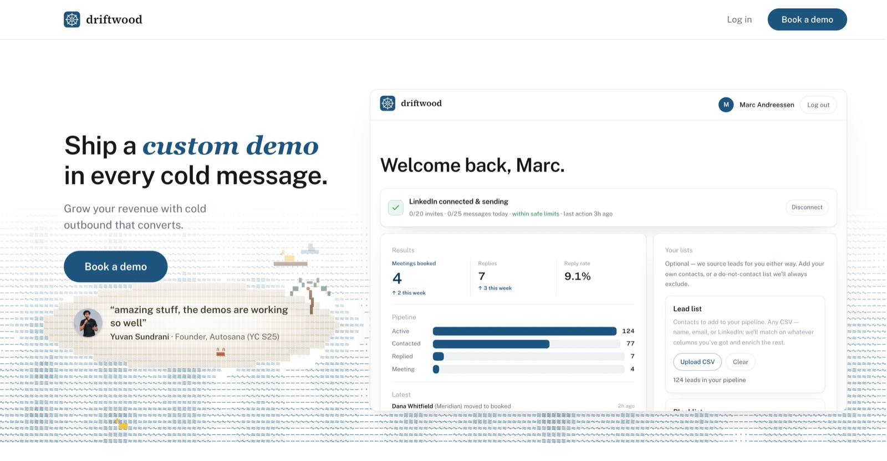

Design system
Driftwood
The shipped design language of driftwood.sh — landing page and dashboard. Pure white ground, a gray ink scale, hairline borders, and one tide-blue accent. The signature isn't a color at all: it's an ASCII character sea, with a rubber duck in it, always.
Colors
Values are verbatim from the shipped code — this is a coded, live site, so the tokens below are copied from its CSS, not sampled.
Ground & ink
The one accent
"One accent. If a design wants a second accent color, the design is wrong." — the system's own rule.
Scenery palette — weathered coast, not postcard
The sea's inhabitants get their own settled palette. One terracotta covers crab, buoys, and coconut. And the ducks are rubber-duck yellow, always — a gray gull was tried and rejected.
Type
Public Sans (variable) for everything functional, Source Serif 4 only for the wordmark, and Georgia italic in tide as the voice accent — one phrase per heading, only where a phrase genuinely outranks the line. Mono is banned from chrome (it reads "AI-generated"); IBM Plex Mono survives only inside the review queue.
Surfaces & components
Buttons
Pills, always. Primary = tide fill, hover tide-deep. There are no black buttons.
Windows
White, 1px line border, 12px radius, and a stacked shadow — 4–5 layers, each doubling the blur and shedding alpha. A single big blur bands against white.
The mat
A tide-wash plate on the white sheet, radius --r-win + 0.9rem — it seats a window instead of a divider separating sections.
subject: a demo I built for
Redaction & chips
Identity we withhold is a gray bar, 2px radius — used consistently for names, companies, addresses. Tinted chips take the wash, never a new color.
The water
The signature: an ASCII character sea on 2D canvas — never rendered 3D. Six characters by wave height, ~15fps terminal cadence, tide-blue by depth. It carries the hero and thin strips at section seams. Movers patrol back and forth — nothing wraps, nothing disappears, it turns around. And every sea strip carries a yellow duck.
· - · · - · ~ - ~ ~ ≈ ~ ≈ ~ - ~ · - · · ~ ~ - ~ · · - · - ~ - ~ - ▸ᵕ› ≈ ≈ ~ ≈ ≋ ≈ ≋ ≈ ~ ≈ ≈ ø ~ - ~ - ~ - ≈ ~ ≈ ≈ ~ ≋ ≈ ≋ ≋ ≈ ≈ ≈ ~ 🌴█ █ █▒ ▒ ≈ ~ ≈ ≋ ≈ ≋ ≈ ≋ ≈ ≋ ≋ ≈ ≈ ~ ≈ ≋ ≋ ≈ ▒ ▒ ▒ ≈ ≋ ≋ ≈ ≋ ≈ ≋
' ' · - ~ ≈ ≋ — grid 8 × 10.5px cells, tide-blue rgba by depthRules the system holds itself to
text-wrap: balance doesn't know which words belong together — bind phrases with so the turn lands where the sense turns.Shipped
This one isn't a mockup — it's live at driftwood.sh.

Provenance: Driftwood shipped as code, so unlike the Stack and Spotify Mix showcases nothing
here is sampled — tokens are copied verbatim from landing/src/index.css and the
rules from design/design-language.md, the project's own source of truth. Fonts are
the site's self-hosted files. The sea above is a static hand-set frame of the real canvas animation.